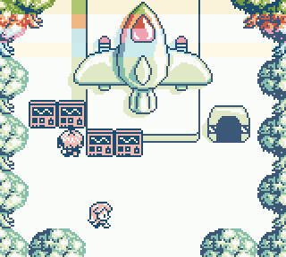
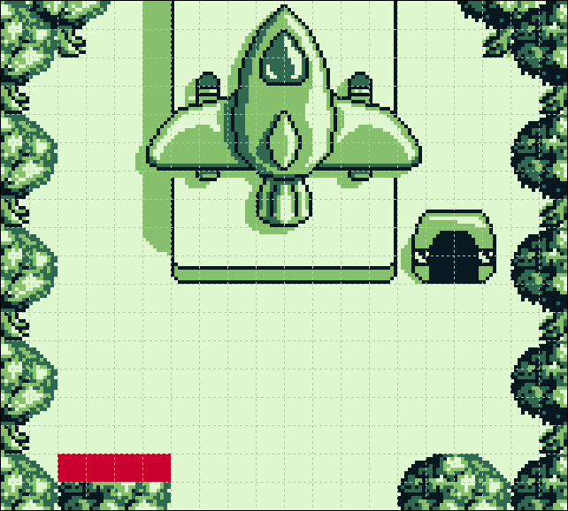

foo
Introduction
Avertissement
Ce projet est personnel et non affilié à https://github.com/chrismaltby/gb-studio. Je ne garantit pas son fonctionnement et me dégage de toute responsabilité liée à son utilisation.
Concept
Au moment où j’écris ceci, cette proposition me permet de pallier l’absence de la fonctionnalité dans gb-studio qui permettrait d’activer la priorité d’une tuile sur les objets (“background priority per tile”). En substance, il s’agit de s’intercaler dans la compilation d’un projet gb-studio pour injecter des tables de priorité, créés par mon programme generateur_bgpriority.
Objectif
L’objectif est de pouvoir ajouter la propriété priorité d’une tuile sur les objets aux tuiles des fichiers background. Quand elle est activée, un objet situé sur une tuile priorisée est affiché au-dessus de la couleur 0 et en dessous des couleurs 1,2 et 3 de la palette de cette tuile. Cela se concrétise par fixer à 1 le bit n°7 de l’attribut d’une tuile, comme l’indique la documentation : https://gbdev.gg8.se/wiki/articles/Video_Display#VRAM_Sprite_Attribute_Table_.28OAM.29
Bit 0-2 Background Palette number (BGP0-7)
Bit 3 Tile VRAM Bank number (0=Bank 0, 1=Bank 1)
Bit 4 Not used
Bit 5 Horizontal Flip (0=Normal, 1=Mirror horizontally)
Bit 6 Vertical Flip (0=Normal, 1=Mirror vertically)
Bit 7 BG-to-OAM Priority (0=Use OAM priority bit, 1=BG Priority)

Configuration
Modifications dans le code source de gb-studio
Dans le projet : https://github.com/chrismaltby/gb-studio
Chemin du fichier modifié : gb-studio\src\lib\compiler\compileData.js
Insérer au début du fichier :
import fs from 'fs';
Inserer plus loin dans le fichier…
if (fs.existsSync(`${projectRoot}/assets/bgpriority/${background.name}_priority.json`)) {
const listeJson = fs.readFileSync(`${projectRoot}/assets/bgpriority/${background.name}_priority.json`,'UTF-8');
const liste = JSON.parse(listeJson);
for(let i = 0; i <liste.length ; i++){
if(liste[i] == true){
background.tileColors[i] = background.tileColors[i] + 128;
}
}
}
… qui se situe juste avant le code existant :
// Determine tilemap attrs
const tilemapAttrData = padArrayEnd(
background.tileColors || [],
tilemapData.length,
0
);
Création du dossier supplémentaire
Créer le dossier bgpriority dans le dossier assets (gb-studio fonctionne de manière traditionnelle si le dossier n’existe pas) :
📂projet
┣ 📂assets
┣ 📂avatars
┣ 📂backgrounds
┣ 📂bgpriority
┣ 📂emotes
┣ 📂fonts
┣ 📂music
┣ 📂sprites
┗ 📂ui
┣ 📂build
â”— [...]
Utilisation
Préparer les fichiers .png de priorité
Pour chaque fichier .png du dossier backgrounds pour lequel on veut gérer la priorité par tuile : - Dans le dossier bgpriority, copier le fichier .png original (où créer un fichier .png de même longueur et largeur) - Le nommer en suffixant le nom original par “_priority” (exemple : pour launch_site.png > launch_site_priority.png)
Dans un éditeur d’image coloriser les tuiles de 8x8 pixels pour lesquelles la priorité est souhaitée avec la couleur : 
#C9002E

Générer les fichiers de priorité
Via la console de commande, saisir le nom du programme suivit du chemin absolu du dossier assets du projet. Pour chaque fichier .png situé dans le dossier bgpriority, il sera créé un fichier de priorité .json du même nom.
generateur_bgpriority.exe "C:\Users\MyName\Documents\projet\assets"
C’est terminé, tout est prêt pour la compilation du projet avec gb-studio.